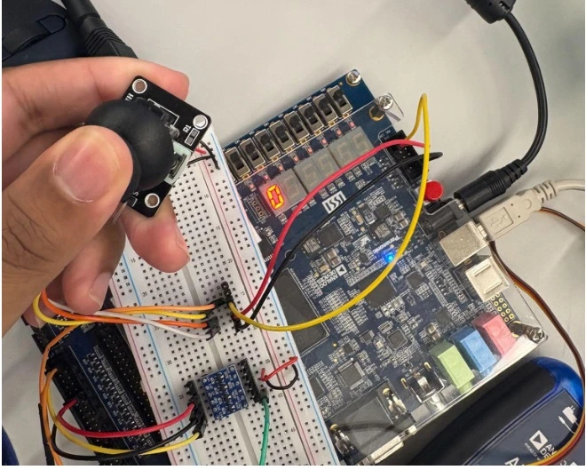
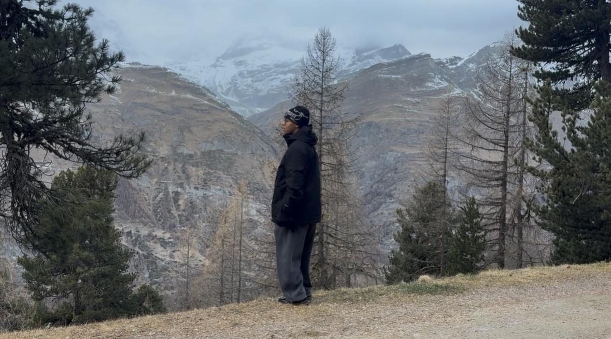

Daniel
Jean-Louis.
I am a second-year computer engineering student at Northeastern University with interests in embedded design, hardware, electrical systems, and robotics. I enjoy bringing ideas to life through hands-on electronics, programming, and physical prototyping.
Explore projects SPARKD27 / CAN TRANSCEIVER↗
SPARKD27 / CAN TRANSCEIVER↗Selected projects
2026
Interactive renewable energy exhibit
Five energy scenarios, two model environments, and a hands-on challenge for young visitors.
CAN transceiver PCB
A club board design connecting a microcontroller to a differential CAN bus.

Joystick-controlled RC servo
An analog joystick sets a servo angle through FPGA logic and a PWM output.

Ultrasonic distance sensor
A DE1-SoC FPGA times a returning echo and displays distance in centimeters.
Intersection traffic controller
A C++ model of north–south and east–west traffic, with signal sequencing and an emergency-vehicle override.
About me
My name is Daniel Jean-Louis, and I am a second-year computer engineering student at Northeastern University. I am interested in embedded design, hardware, electrical systems, robotics, and hands-on electronics. I enjoy understanding how hardware and software work together, and I am especially drawn to projects where I can turn an idea into something people can interact with.
Through my coursework and projects, I have gained experience with FPGA-based digital logic, microcontrollers, circuit testing, PCB design, and C++ programming. My work has included connecting sensors and servos to an FPGA and developing a CAN transceiver board in Altium Designer. These experiences have given me practice with the full process of a student engineering project, from planning and assembly to debugging, testing, and documenting results. Through Northeastern Electric Racing, I am continuing to develop my experience with electrical systems and PCB design.
Leadership has been an important part of my experience both in and outside of engineering. During high school, I took on leadership responsibilities at my church, including speaking in front of large audiences and helping plan a conference. While studying abroad through N.U.in, I proposed adding a vice president role to our Community Council and went on to serve in that position, helping plan events for the student body.
I have also applied those skills to engineering teams, serving as project lead for our intersection traffic controller and taking on leadership responsibilities during parts of our renewable-energy project. These experiences have strengthened my ability to take initiative, organize tasks, communicate clearly, and help a team work toward a shared goal.
I am seeking a January–June 2027 co-op where I can contribute to engineering projects through prototyping, programming, testing, and technical documentation. I look forward to learning from experienced engineers, taking on new challenges, and helping develop products and systems that people use.

Outside of engineering
I enjoy video editing, playing the piano, and fashion. These interests give me different ways to explore creativity and express my ideas. I also enjoy traveling and spending time outdoors. Here is a photo from a hike I did in Switzerland.